RoundHouse, eleven ways
Eleven front-end websites for RoundHouse, each modelled on the look and feel of a world-leading site: its navigation, hero, components, type and colour. The content is RoundHouse's own: services, published prices, Diagnose → Build → Run, sample case studies and an enquiry form.
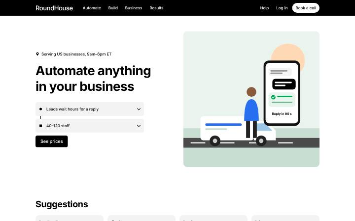
After Uber
01Black top bar, bold left hero with a fare-style price estimator, grey suggestion cards, black footer.
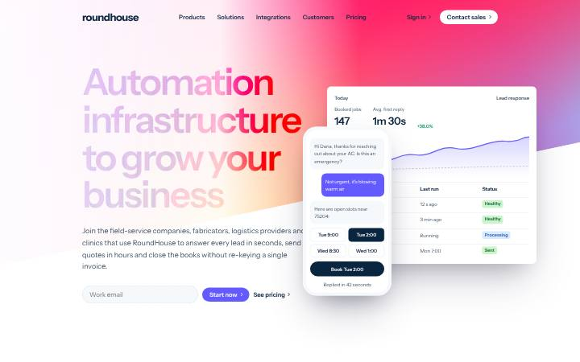
After Stripe
02Animated skewed gradient, navy headline, dashboard and phone mockups, dark code band.
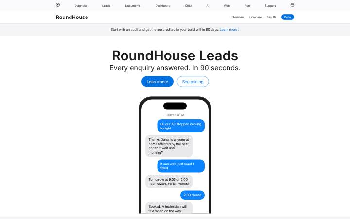
After Apple
03Thin global nav, stacked product tiles with blue pills, 2-up grid, "which plan is right for you".
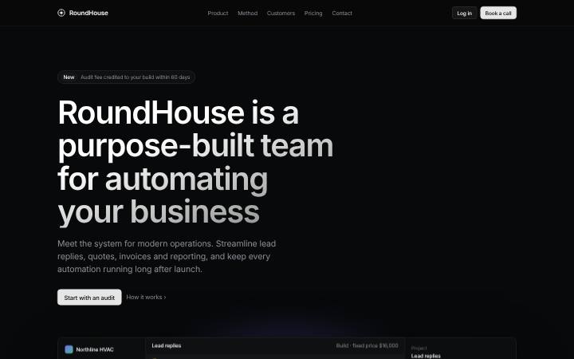
After Linear
04Near-black canvas, gradient headlines, tilted issue-tracker mockup, 1.0 / 2.0 / 3.0 chapters.
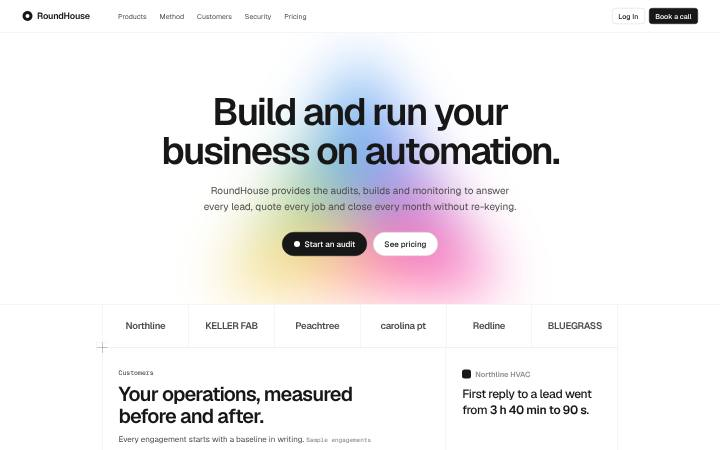
After Vercel
05Geist type, prism glow, crosshair grid of customer stats, go-live log, light and dark themes.
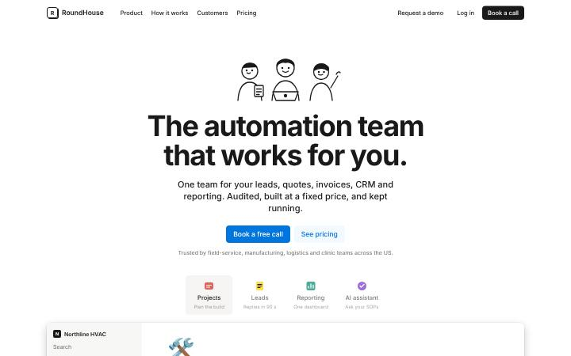
After Notion
06Ink line drawings, centred bold headline, tabbed workspace mockup, pale cards, blue CTA.
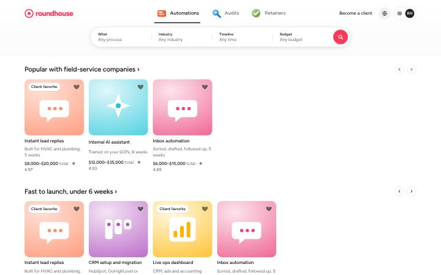
After Airbnb
07Pill search that filters services, listing-card rows with favourites, listing modal with a reserve card.
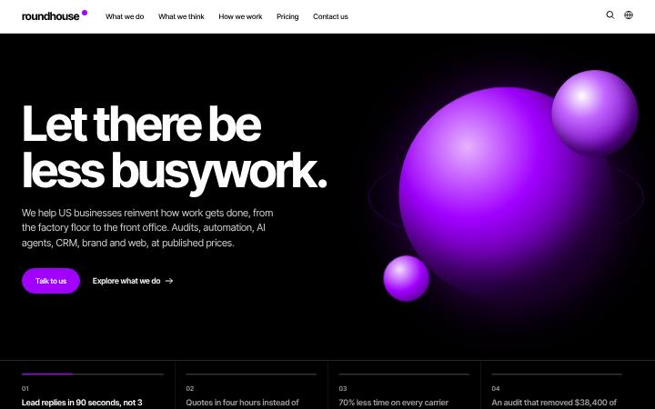
After Accenture
08Black and electric purple, huge type, 3D spheres, numbered featured carousel, big link lists.
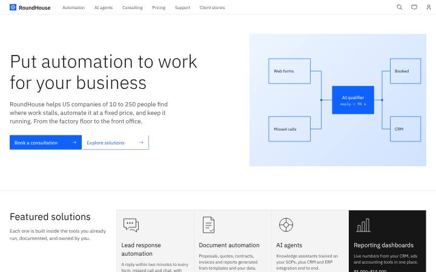
After IBM
09Carbon-style masthead, light Plex leadspace, square blue buttons, tiles, tabs, accordion, data table.
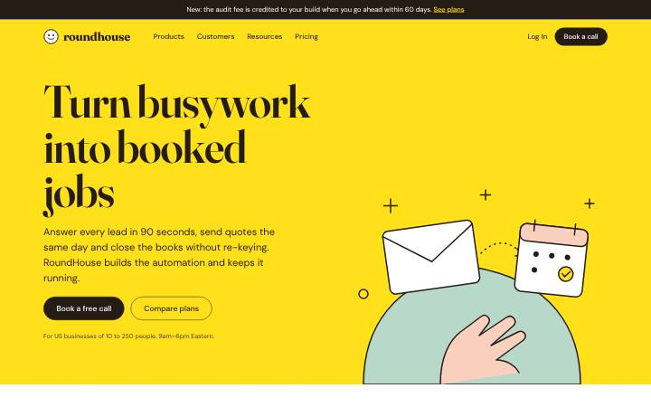
After Mailchimp
10Yellow hero, bold serif, playful ink illustration, journey-builder flow, plan cards with a toggle.
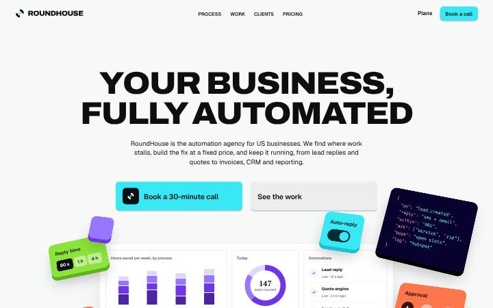
After Tokens Studio
11Shrinking floating header, 3D tokens that pop and drift, timed process stepper, stacked colour panels, portfolio, reviews and pricing.
Front end only. Each enquiry form validates and prepares a ready-to-send message instead of posting anywhere. Case-study figures are the labelled samples from the Round House content file, and the client names in logo rows are placeholders.